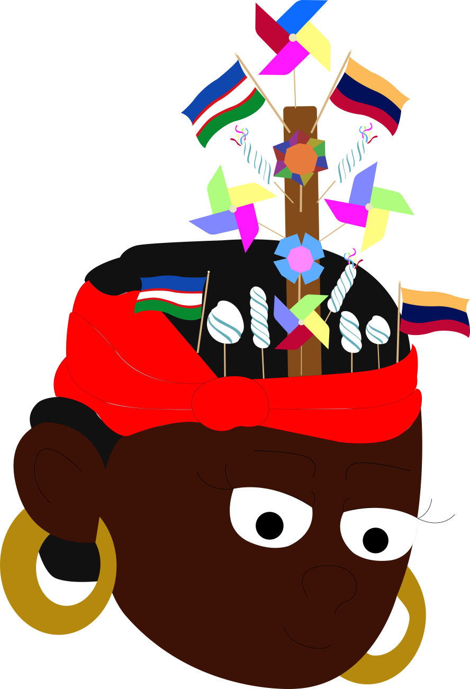
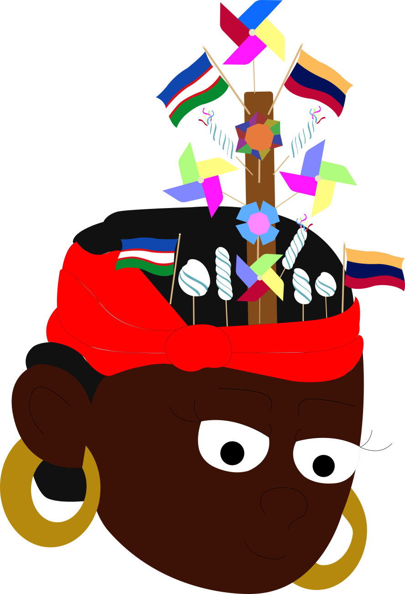

Bienvenidos a Huellas en borondo, hogar de la tradición del día de los ahijados. En este Runner podrás intercambiar entre 2 personajes, para recorrer la cuidad y recolectar la mayor cantidad de macetas de alfeñique junto a Dorotea y Benkos, para así restablecer la tradición de su mundo antes de que el villano Sobra del olvido acabe con esta.
Control: